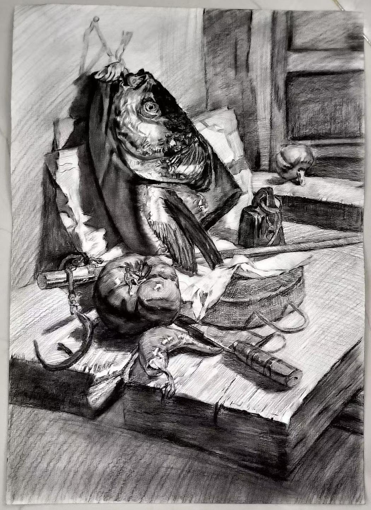

B.Sc. in Information Technology | AI & Robotics Research
I am an undergraduate student in Information Technology at the Universiti Utara Malaysia.
Alongside my research, I contribute as a peer reviewer for Springer Nature journals across artificial intelligence, robotics, information security, and computing.
My research interests include the applications of artificial intelligence across various fields, the integration of deep learning with environmental science,
and the impact of AI adoption on firms' innovation performance. I am dedicated to exploring how technology can advance both academic research and practical applications.
I am a diligent, detail-oriented, and proactive learner with a strong desire to expand my subject-matter expertise.
I am optimistic, resilient, and highly adaptable, with a curiosity about diverse topics.
A research framework for LLM-guided runtime recovery in reinforcement learning agents, using a local LLM planner and task arbiter to handle anomalies such as obstruction, displacement, and goal invalidation in grid-world tasks.
A kinematic-aware approach to Iterative Hand Optimization (IHO), incorporating hand joint constraints and motion priors for more accurate and physically plausible hand pose estimation.
American Sign Language (ASL) recognition and reproduction using the Shadow Dexterous Hand robotic system, bridging computer vision and dexterous robotic manipulation.
A decoupled dual-brain architecture for autonomous robot navigation, separating high-level planning from low-level control to improve adaptability in complex environments.
Completed 9 manuscript reviews across 6 Springer Nature journals in artificial intelligence, robotics, information security, multidisciplinary science, and computing.
Data Science Summer School 2025
Hertie School Data Science Lab August 04 - August 08, 2025
Actively participated in the Data Science Summer School directed by Prof. Simon Munzert
🎓 Education
B.Sc. in Information Technology
Universiti Utara Malaysia Current
💡 Skills & Expertise
Proficient in Microsoft Word, Excel, and PowerPoint | Python fundamentals |
Leadership, problem-solving, communication, and teamwork | High stress tolerance and strong sense of responsibility
🎨 Interests & Hobbies
🎨
Drawing
I enjoy drawing to relax and express creativity
🏀
Basketball
Playing basketball keeps me active and energized
🏃
Running
Completed 2 community 5K runs
✨ My Artwork
Though I'm a beginner in drawing, I love using art to unwind and clear my mind.

Original still life sketch — Finding peace through art